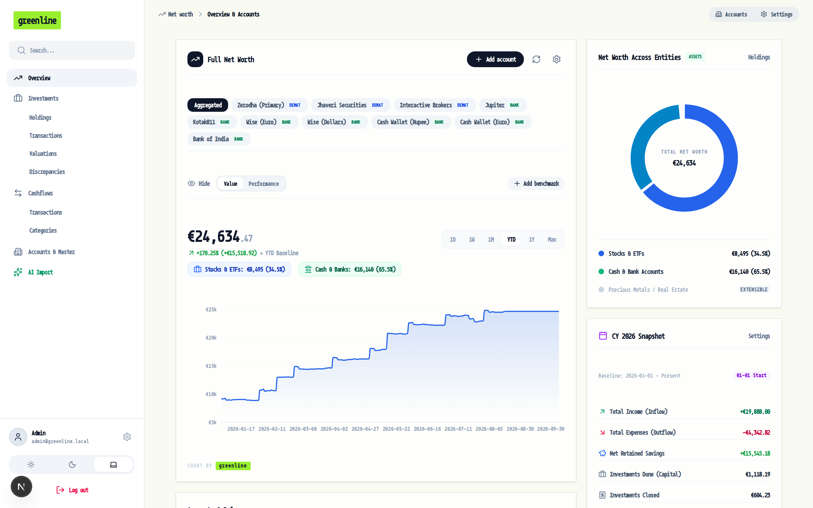
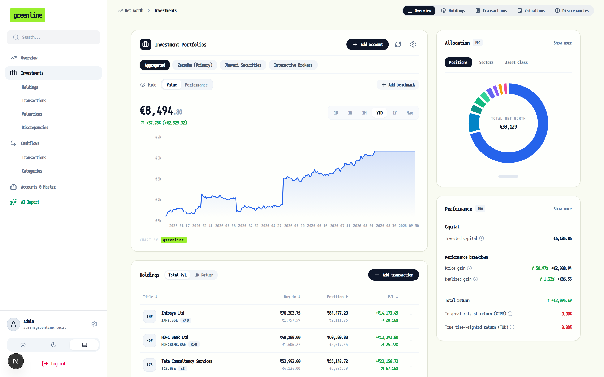
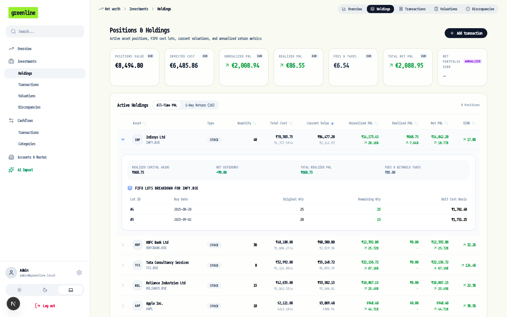
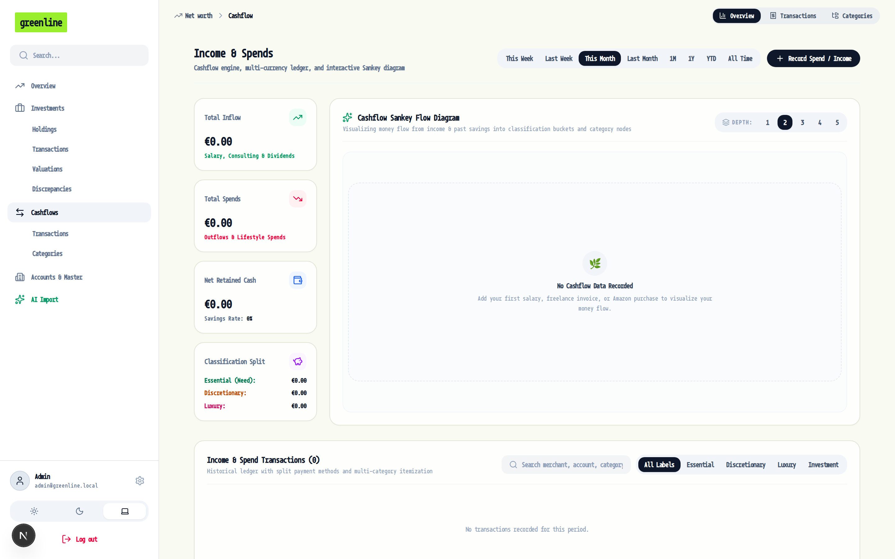
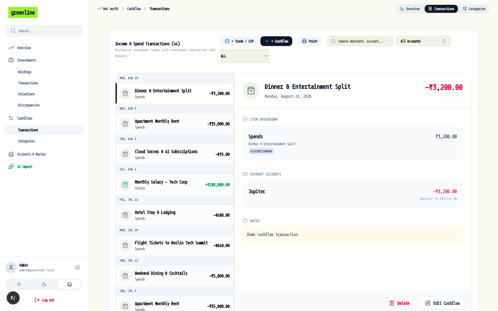
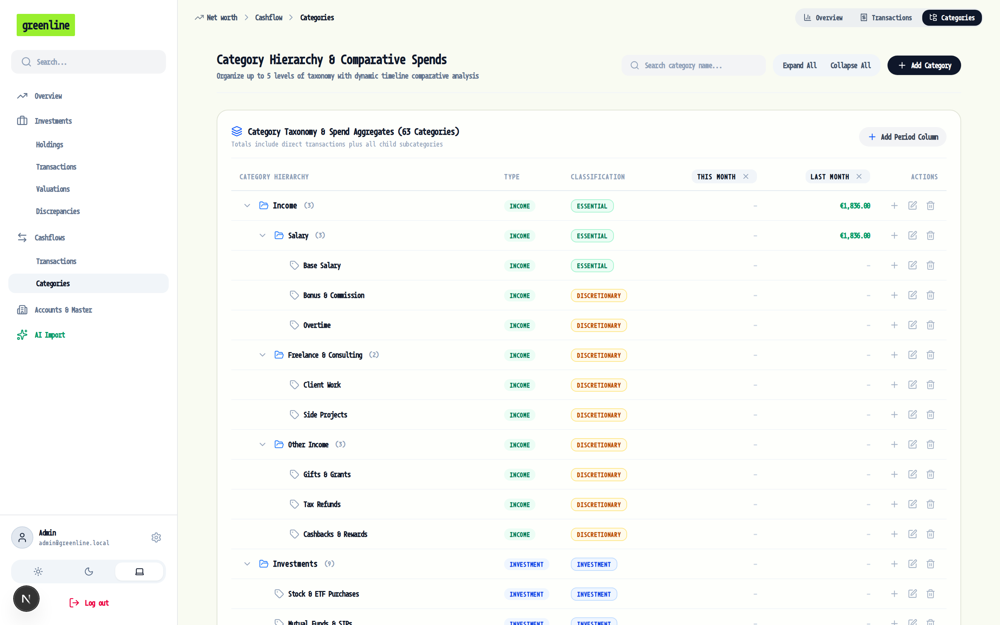
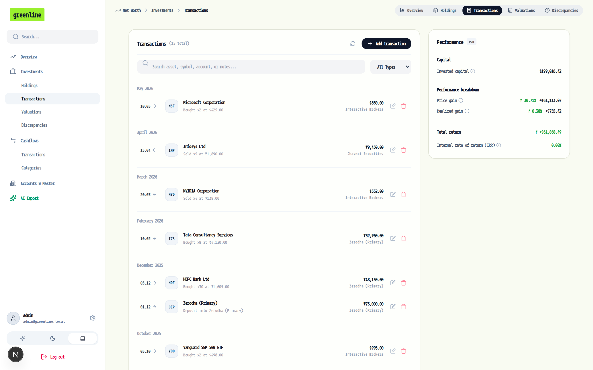
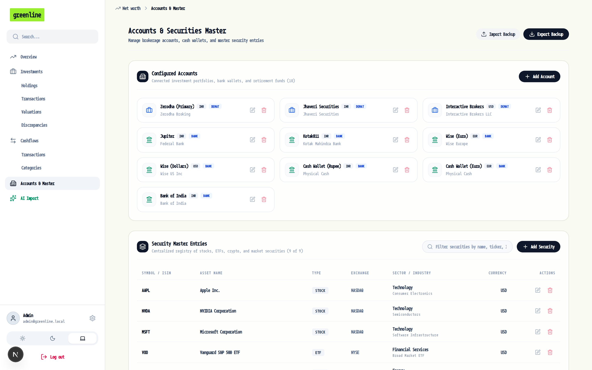
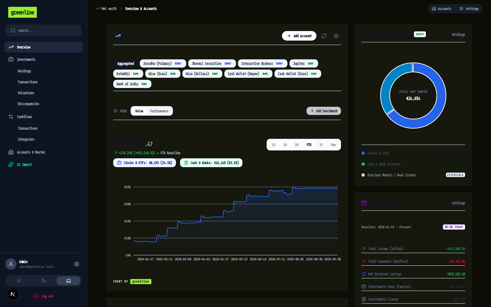

An elegant, real-time platform designed to aggregate multi-currency portfolios across brokerages, demat accounts, crypto wallets, and bank accounts. Features strict FIFO cost lot accounting, annualized XIRR / TWR return tracking, dynamic Cashflow Sankey modeling, and market benchmark overlays.

Traditional spreadsheets break under corporate actions and currency fluctuations. Greenline provides institutional-grade mathematical models running locally on your hardware.
Trading and demat accounts reflect total valuation (cash_balance + securities_value), eliminating fragmented balances and preventing double-counting.
Chronologically depletes buy lots on every sell. Purchase fees and taxes are capitalized into unit cost basis, ensuring strict tax compliance.
Tracks capital gains, dividend yields, acquisition costs, and sale withholding taxes. Total Net P&L deducts all transaction fees and taxes.
Multi-tier flow diagram visualizing income sources, essential/discretionary classifications, down to individual category line items.
Seamless conversion across EUR, USD, INR, GBP, CAD, and more. Set your master currency and view your entire global net worth unified.
Self-hosted local SQLite database. Zero external trackers, zero cloud telemetry. Your financial records remain entirely in your control.
Click through the tabs below to explore real screenshots generated with actual multi-currency portfolios and tax-lot data.
Get an instantaneous pulse on your total financial life. The dashboard harmonizes cash accounts and brokerages into a single master currency curve.
Evaluate your investment performance against major indices while visualizing capital distribution across sectors and asset classes.

Expand any holding to inspect open FIFO cost lots, purchase dates, and capitalized cost basis per unit. Includes separate active and closed positions ledgers.

Visualize exactly where your wealth flows. Greenline traces incoming cash through classification tiers (Essential, Discretionary, Luxury, Investment) down to specific categories.

Track everyday receipts and recurring transactions. Categorize items across accounts and print structured financial summaries on demand.

Organize expenditures into intuitive nested trees spanning Income, Living Expenses, Discretionary Spends, and Account Transfers.

Log Buy, Sell, Dividend, Split, and Capital Return events. Built-in Yahoo Finance search auto-enriches ISIN, Sector, Industry, and Asset Type.

Manage demat brokerages, checking accounts, international multicurrency banks (Wise, Revolut), and physical cash wallets in one place.

Presenting in a coffee shop or streaming online? Click the privacy eye icon in the top toolbar to instantaneously blur all balances and trade values.
Designed with high-contrast slate and emerald palettes to ensure comfort during late-night portfolio reviews.
#0A0F1D) with high readability

See why privacy-conscious investors choose Greenline over manual spreadsheets and closed-source cloud apps.
| Feature | 🌿 Greenline | Spreadsheets | Commercial Cloud Trackers |
|---|---|---|---|
| 100% Self-Hosted & Local Storage | ✓ Yes (SQLite) | ✓ Yes (Local files) | ✗ No (Cloud locked) |
| Strict FIFO Tax-Lot Accounting | ✓ Automated Engine | ✗ Complex manual formulas | ✓ Often behind premium paywall |
| Fee & Tax Capitalization into Cost Basis | ✓ Built-in | ✗ Hard to calculate | ✗ Often ignores purchase fees |
| Dynamic Cashflow Sankey Diagram | ✓ Built-in | ✗ Requires third-party tools | ✗ Rarely available |
| Annualized XIRR & TWR Calculations | ✓ Automated Newton-Raphson | Partial (XIRR formula) | ✓ Yes |
| Zero Subscription & Zero Data Selling | ✓ Free & Open Source (MIT) | ✓ Free | ✗ $100–$300/year subscription |
| Privacy & Streaming Shield Mode | ✓ Instant 1-Click | ✗ No | ✗ Rare |
Clone the repository and launch both the Next.js frontend and FastAPI backend with a single Docker Compose command.
git clone https://github.com/jayam04/greenline.git
cd greenline
docker compose up -d
Then navigate to http://localhost:3000 in your browser.
Default credentials: Username admin • Password admin123